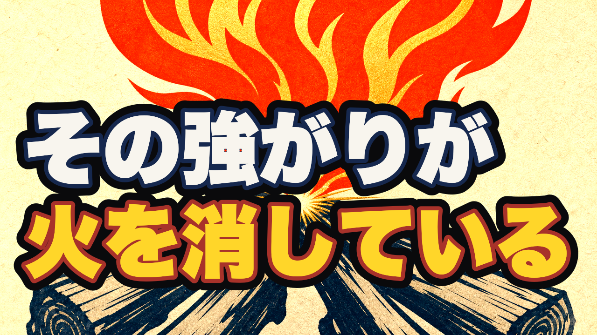

第43話 公開キット確認 ＋ 公開枠の決裁
四月は君の嘘 × 離（り）／ content/063 ／ 8分29秒 ／ 2026-07-25
決めてほしいのは2つだけです。
- ① 公開日：2026-07-31（木）4:00 JST を推奨（07-28=ep44、08-04=ep45 の間で週2ペースが崩れない唯一の空き）
- ② いま非公開で予約アップまで進めてよいか（公開ボタンは最後まで押しません）
※ ショート1本（書き下ろし）は、この決裁と並行して私が作ります。規約どおり全素材が揃ってから一括で上げます。
サムネイル（fork独立採点 90点で合格）

実寸 1280×720

フィード実寸 360px（ここで読めるかが勝負）
3周かけて直した理由（独立採点が2回落とした）
- 1周目 74点：直近5本（058〜062）と骨格が同型＝「紺黒地＋左上の赤タグ＋下段2行」。関連動画で自分の過去作と共食いすると指摘。輝度も直近6本で最暗。
- 2周目 88点：明るい生成り地＋平塗りの炎に変更、作品名タグを廃止（タイトルに既出＝面積の無駄）。あと2点は「骨格をもう一つ壊せ」。
- 3周目 90点で合格：炎に白ノックアウトの題字を乗せ、題字を上部へ。コピーも「その強がりが／火を消している」＝タイトルの語をひとつも繰り返さない一撃に。
タイトル（99点で選定・100点満点の4案中）
人に頼って立ち直ると、どこかで後ろめたい。｜四月は君の嘘×離
H58 痛み先頭型。匿名4案をブラインド比較して、この案が最高得点（他案＝「一人で立ち直ろうとするほど、火は静かに消えていく」98点／「助けられて元気が出た日ほど、なぜか少し落ち込む」94点／「『大丈夫です』と言ってしまう人が、いちばん燃え尽きる」88点）。
冒頭フック（100点で選定・本編の実物が最高得点）
落ち込んだとき、一人で立ち直らなきゃ、と思うことがあります。誰かに励まされて元気が出たとしても、 どこかで、これは自分の力じゃないな、と後ろめたくなる。人に寄りかかって前に進むのは、弱いことだと、 どこかで思っているんです。でも、本当にどん底から立ち直った人をよく見ると、たいてい、一人では戻って いないんです。誰かに照らされて、その光に引きずられるようにして、戻ってきている。それは弱さなのか。 今日は、その話です。
別案3つと匿名で戦わせた結果、実際に収録済みの冒頭が100点で勝ち。作り直し不要です。
概要欄
落ち込んだとき、一人で立ち直らなきゃ、と思う。 誰かに励まされて元気が出ても、「これは自分の力じゃないな」と、どこかで後ろめたくなる。 四月は君の嘘で、有馬公生が止まった音を取り戻した物語を、易経の「離」で読み解きます。 ■〈名作×易経・全64話〉 ▼ チャプター（14章・0:00〜7:49） ▼ このチャンネルについて ▼ 今回のパターン（離＝火は薪に付いて初めて燃える／畜牝牛吉／29番坎の次が30番離） ▼ 参照した作品（四月は君の嘘・のだめカンタービレ） ▼ 免責 #易経 #離 #四月は君の嘘 #アニメ考察 #漫画考察
全文＝content/063/description.txt。TikTok用キャプションと縦カバー（1080×1920）も生成済み。
機械ゲート（全部緑）
| ゲート | 結果 | 中身 |
|---|---|---|
| script / visuals / full-view | ok | 台本92点・画像91点・通し視聴 本人承認済み |
| mix（音・黒落ち） | PASS 警告0 | 尺509.5s・ピーク−3.9dB・境界27箇所すべて黒落ちなし |
| publish（youtube-long） | ready ok | タイトル/フック/サムネ/本編の4証跡そろい、欠落・失効ゼロ |
この後の段取り
- ①②の決裁 →
coord.sh claim-slotで枠確保 →yt-publish --visibility private --publish-atで非公開の予約アップ → Studioで最終確認 - ショート1本（隣の卦型・書き下ろし）を作成 → 機械QA → fork採点90以上 → あなたの確認 → 本編公開の翌朝5:00枠
- TikTok縦ロングは
tiktok-state.mjsで重複を確認してから番号順に予約